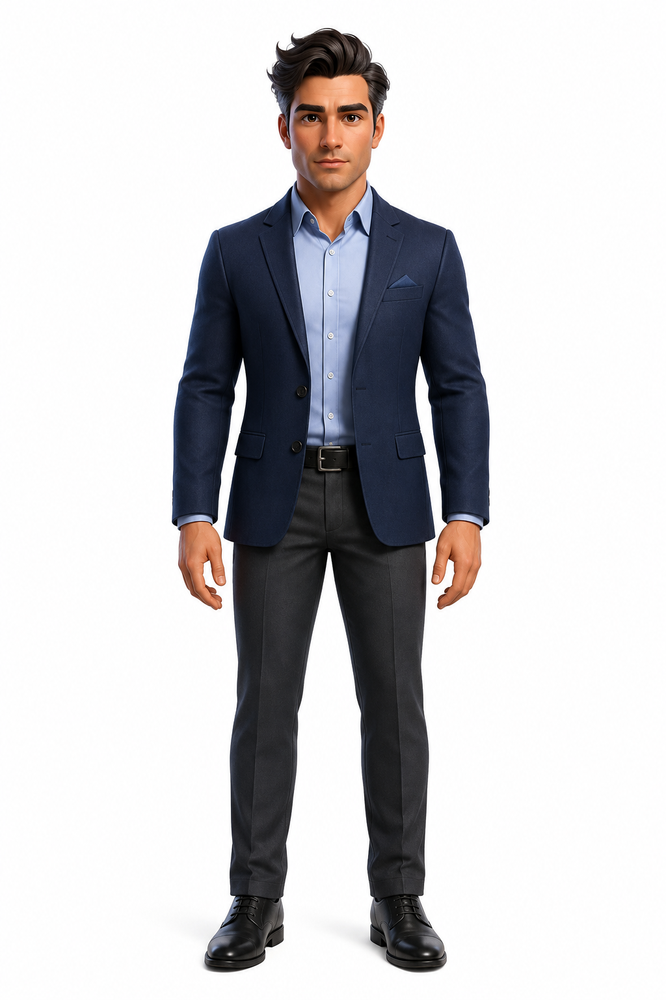

ירון בוסקילהמהנדס תוכנה · בונה סוכני AI
אני כותב אפיון גם למודל.
21 שנות הנדסת תוכנה. אותה שיטה, מול סוכני AI.
מ-2017 אני כותב ומוביל מערכת לתיעוד הנדסי בארגון גדול. המערכת גדלה עם השנים, והובלתי בה פירוק מתמשך: חילצתי חמישה שירותים עצמאיים, ובאזורים שלא ניתן היה לחלץ הקטנתי תלויות בתוך הקוד. אני זה שהגדיר אילו אזורים כבר אסור לגעת בהם. בניתי והובלתי צוות בדיקות, ובאפיון אני לא רק מקבל דרישות — אני עוזר ללקוח לנסח אותן.
בערבים אני מלמד ילדים עם ליקויי למידה. משם מגיע החזון שאני בונה אליו: מערכת שמכינה למורה מערכי שיעור. לא כדי ש-AI ילמד את הילד — כדי שלמורה יישאר זמן ללמד.
הכירו את יתרו

זה יתרו. קראתי לו על שם היועץ שראה את משה קורס תחת העומס ובנה לו מבנה — לא עשה את העבודה במקומו.
בניתי אותו בקורס טירונות סוכנים של אִימפּרוּב: מיפוי, מסמכי ידע, system prompt, אריזה כפלאגין. הידע שלו מפוצל לשישה סקילים לפי מתי הוא נדרש — חלק נטען בכל שיחה, וחלק רק כשהמשימה נוגעת בתחום.
וההוראה שהכי חשובה לי בו: לא לרצות אותי, ולא לאשר לי שאני צודק. ביקשתי ממנו אמת, לא תמיכה.
מה בניתי
יתרו — עוזר אישי שעוזר לי לתכנן, לתעדף ולפרק החלטות. ארוז כפלאגין, מותקן ועובד.